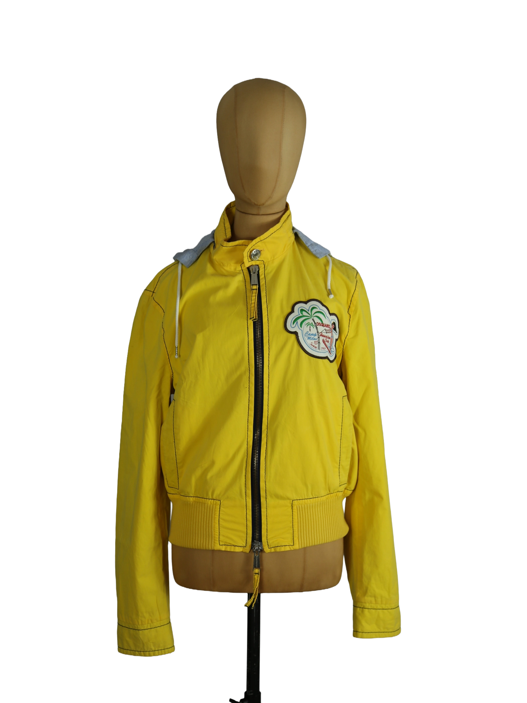

1 / 17Aus dem kuratierten Archiv von Disorder119. Leichte Jacke von Dsquared2 in markantem Gelb mit sportivem, leicht verkürztem Schnitt. Die klare Silhouette wird durch präzise gesetzte Nähte und einen durchgehenden Frontreißverschluss definiert. Charakteristisch ist der kontrastierende graue Kapuzenbereich, der dem Piece eine hybride Mischung aus Utility und Casual verleiht. Auf der Brust setzt ein grafischer Patch mit illustrativem Motiv einen visuellen Fokus und unterstreicht die verspielte, dennoch kontrollierte Designhandschrift der Marke. Die elastischen Bündchen am Saum sorgen für eine strukturierte Passform, während das Material eine leichte, bewegliche Tragbarkeit bietet. Details: Marke: Dsquared2 Farbe: Gelb Größe: 50 Passform: Regulär, leicht verkürzt Verschluss: Reißverschluss Material: Baumwollmischung Herstellungsland: Italien Fotografie & Passform: Das Kleidungsstück wurde auf unserer Standard-Schneiderpuppe fotografiert, die wir zur konsistenten Darstellung aller Kleidungsstücke verwenden. Maße der Schneiderpuppe: Brustumfang 89 cm Taillenumfang 66 cm Hüftumfang 89 cm Schulterbreite 38 cm Zustand: Guter gebrauchter Zustand mit leichten Tragespuren. Rechtliche Hinweise: Verkauf als gebrauchtes Kleidungsstück. Die Beschreibung erfolgt nach bestem Wissen und Gewissen. Farbnuancen und Oberflächenwirkungen können aufgrund von Lichtverhältnissen bei der Fotografie sowie unterschiedlicher Bildschirmdarstellungen leicht vom Original abweichen. Disorder119 steht für sorgfältig kuratierte Designerstücke mit Fokus auf Authentizität, Qualität und zeitlose Relevanz.
Shop-Kontakt noch nicht eingerichtet: WhatsApp-Nummer oder E-Mail-Adresse fehlen in SHOP_CONFIG (index.html).
Disorder119 · Kuratiertes Archiv für Designer-, Vintage- und Contemporary-Mode. Jedes Stück wird einzeln ausgewählt, fotografiert und beschrieben.